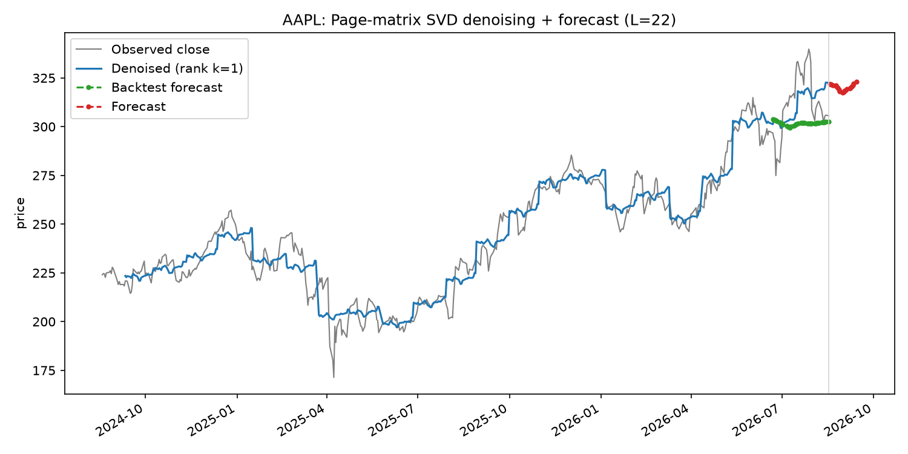
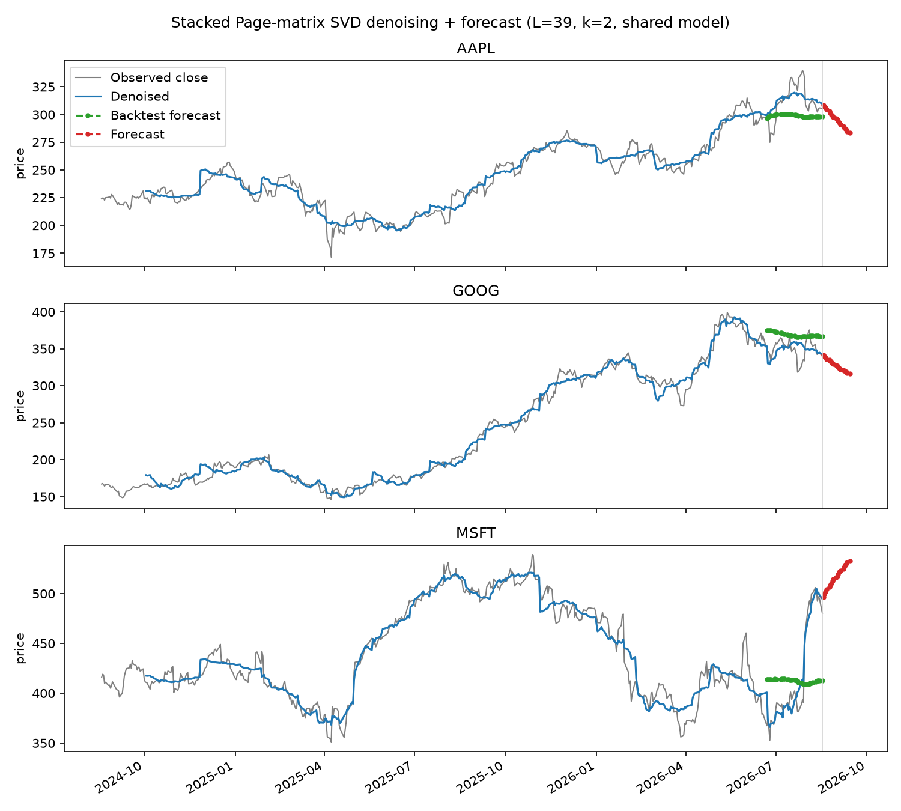

On Multivariate Singular Spectrum Analysis (Agarwal, Alomar & Shah, 2020)¶
Reference
Agarwal, A., Alomar, A., Shah, D. On Multivariate Singular Spectrum Analysis: Tensor and Matrix Variants. arXiv:2006.13448 · reference implementation (mSSA)
The paper covers a lot of ground (a tensor variant tSSA, variance estimation, a "Hankel calculus" expressiveness theory, finite-sample error bounds). This note only covers the piece that's directly useful in practice and reusable outside the paper's theory: building a Page matrix from a time series and using SVD on it for denoising and forecasting — the matrix-based mSSA algorithm in the paper's Section 1.1.
Problem¶
Classical Singular Spectrum Analysis (SSA) denoises and forecasts a single time series by embedding it into a matrix and using its low-rank structure. The standard embedding is a Hankel (trajectory) matrix: overlapping length-\(L\) windows, shifted one step at a time, as columns. Overlapping windows share most of their entries with their neighbors, which makes the resulting matrix's entries highly dependent on each other — convenient for classical SSA's signal-extraction heuristics, but hard to analyze rigorously (matrix estimation theory generally wants independent-ish noise across entries).
Key idea: the Page matrix¶
Swap the overlapping Hankel embedding for a Page matrix: chop the series into non-overlapping consecutive length-\(L\) blocks and lay them out as columns.
for a series \(X(1), \dots, X(T)\) (\(T\) assumed a multiple of \(L\) for simplicity). Column \(j\) is just the \(j\)-th consecutive chunk of \(L\) observations — no overlap with column \(j{+}1\). That non-overlap is what lets the paper treat columns as close enough to independent samples from a shared low-rank column space, which is what its finite-sample guarantees are built on (see Appendix A of the paper for the fuller Page-vs-Hankel discussion).
Relation to SVD applied elsewhere
Once you have a matrix, denoising it by keeping only its top singular directions is the same low-rank approximation idea used throughout these notes — the Page matrix is just a specific, forecasting-friendly way to turn a single time series into a matrix in the first place.
Denoising: Hard Singular Value Thresholding (HSVT)¶
Take the SVD \(\mathrm{P}(X,T,L) = \sum_\ell s_\ell u_\ell v_\ell^\top\) and keep only the top \(k\) terms:
Reading the entries of \(\widehat{\mathrm{P}}\) back out in the same
row/column order used to build \(\mathrm{P}\) gives a denoised version of
the original series — the paper calls this the de-noised and imputed
estimate \(\hat f(t)\), since the same operation fills in any missing
entries (they're zero-filled before the SVD, same as NaN handling in
any matrix-completion setup).
\(k\) is chosen by cross-validation in the paper; a simpler practical stand-in used in the code below is picking the smallest \(k\) whose singular values capture some fixed fraction (e.g. 90%) of the total squared singular value ("spectral energy").
Forecasting: page-wise linear regression¶
Denoising alone only reconstructs values you already observed. To forecast, the paper fits a linear model that predicts the last row of a page from the denoised first \(L-1\) rows of that same page:
with one important detail: \(x_m\)'s denoised values are computed after zeroing out the page's own last row first, so the features for page \(m\) never get to see (leak) the value they're trying to predict.
Once \(\hat\beta\) is fit, forecasting a new point just means: take the last \(L-1\) known values, dot them with \(\hat\beta\). The paper's own formula covers one step past the observed data; turning that into a genuine multi-step-ahead forecast (rolling the prediction forward, treating each forecast as if it were observed to predict the next one) is a standard extension, not something the paper's finite-sample guarantees cover directly — worth keeping in mind when reading the forecasts below.
Multivariate extension (mSSA): stack, don't average¶
With \(N\) related series, mSSA builds each series' own Page matrix and concatenates them column-wise into one \(L \times (N \cdot T/L)\) stacked Page matrix. HSVT and the same page-wise regression are then applied once, across all series' pages pooled together — one shared \(L\), one shared rank \(k\), one shared \(\hat\beta\). This is the whole value proposition of mSSA over running SSA separately on each series: if the series share latent structure (e.g. stocks in the same sector moving together), pooling their pages gives the SVD more (approximately independent) samples of that shared structure to average over, which the paper shows tightens the error bound from SSA's \(1/\sqrt{T}\) to mSSA's \(1/\sqrt{\min(N,T)\,T}\).
Scale matters when pooling
Stacking raw values only makes sense if the series are on comparable scales. A $500 stock and a $30 stock pooled without normalizing would just have the shared regression fit mostly whichever series has the larger scale. The code below z-scores each series before pooling and un-scales the forecasts afterward.
Worked example: single stock¶
code/svd_page_matrix_stock_forecast.py
downloads a stock's closing prices with yfinance, builds its Page
matrix with \(L = \sqrt{T}\) (the paper's suggested window length for a
single series), denoises it, fits the forecasting regression, and rolls
the forecast forward:
def fit_forecast_model(x, L, k):
P = page_matrix(x, L)
P_masked = P.copy()
P_masked[-1, :] = 0.0 # avoid leaking the target into its own features
u_k, s_k, vt_k = hard_singular_value_threshold(P_masked, k)
P_hat = u_k @ np.diag(s_k) @ vt_k
features = P_hat[:-1, :].T # denoised history within each page
targets = P[-1, :] # actual next-step value for each page
beta, *_ = np.linalg.lstsq(features, targets, rcond=None)
return beta

The rank-1 denoised line has a visible "staircase" look — with a small \(k\), the Page matrix's reconstruction is close to one shared shape repeated per page, so each length-\(L\) block collapses toward a roughly constant level rather than a smooth trend line.
Passing --backtest-days 40 holds out the last 40 trading days, refits
the model on everything before that, and forecasts them so they can be
checked against prices that already happened (the green line above) —
the only way to tell whether the red genuine forecast past the end of the
data is remotely trustworthy, since there's no ground truth to compare it
against yet.
Worked example: multiple stocks¶
code/svd_page_matrix_multi_stock_forecast.py
downloads several tickers at once, aligns them to shared trading days,
z-scores each series, and pools their Page matrices into one stacked
matrix before fitting a single shared forecasting model:
def fit_forecast_model(prices, L, k):
stacked = stacked_page_matrix(prices, L) # column-wise concat across N series
stacked_masked = stacked.copy()
stacked_masked[-1, :] = 0.0
u_k, s_k, vt_k = hard_singular_value_threshold(stacked_masked, k)
stacked_hat = u_k @ np.diag(s_k) @ vt_k
features = stacked_hat[:-1, :].T # pooled across every series' pages
targets = stacked[-1, :]
beta, *_ = np.linalg.lstsq(features, targets, rcond=None)
return beta

All three stocks are denoised and forecast by the same \(\hat\beta\) —
only each stock's own recent prices differ as inputs. The same
--backtest-days option is available here, and it makes the shared
model's blind spot obvious: MSFT had a sharp run-up during the held-out
window that none of the three stocks' recent history predicted, so the
green backtest line for MSFT stays flat while the actual price jumps —
a reminder that a model built on a couple of low-rank trend directions
won't catch a genuine regime change, whether it's forecasting on its own
or pooled with other stocks. See
code/README.md
for how to run either script yourself.
What this note skips
The paper's Table 1 compares mSSA against SSA, LSTM, DeepAR, TRMF,
Prophet, and VAR on several benchmark datasets — mSSA does well, but
this note doesn't cover those comparisons, the tensor variant (tSSA),
or the finite-sample proofs. It also doesn't reproduce the paper's
reference mSSA implementation;
the code linked above is a from-scratch, simplified rewrite of the
Page-matrix technique against real stock data.
Open questions / things to dig into¶
- How much does the choice of \(L\) actually matter in practice for daily stock data — is \(\sqrt{T}\) noticeably better than, say, a 5-day (trading week) or 21-day (trading month) window?
- The paper's tensor variant (tSSA) is supposed to out-perform mSSA when \(N\) is large relative to \(T\) — worth a follow-up note once there's a concrete use case with many series and a shorter history each.